【YMM4】正規表現でより便利な発音辞書を作ろう！
#動画関連
2024/07/13
YMM4の辞書って？
合成音声を使った動画を作るのに欠かせない「YMM4（ゆっくりムービーメーカー4）」には、辞書という機能があります。
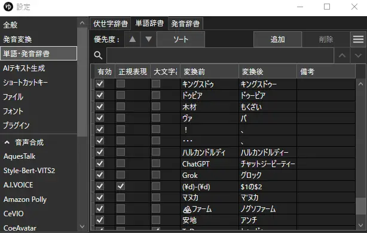上の画像が発音・単語辞書の設定画面ですね。
ここでは特定の単語の読み方を自分で設定することが出来ます。
例えば、「キャンディ」と読ませたい時。
辞書を設定せず普通に「キャンディ」と入力すると・・・
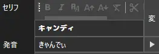発音はそのまま「きゃんでぃ」となります。
しかし、実際に聞いてみれば分かるのですが、発音が「きゃんでぃ」だと「でぃ」の所で止まってしまうので少し発音として不自然です。
僕達が普段「キャンディ」を口で発音するときは、「きゃんでぃー」と発音しているハズです。
しかし、それを「キャンディ」と入力するたびに直していくのはめっちゃ面倒くさいです。
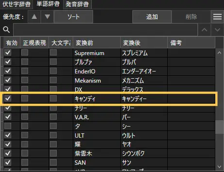そこで、上の画像のようにあらかじめ発音辞書に「キャンディ」を「きゃんでぃー」と発音させるように登録すれば、「キャンディ」と入力するだけで「きゃんでぃー」と読んでくれるようになります。
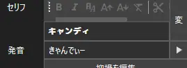発音辞書の設定方法
発音辞書を設定する方法を解説します。
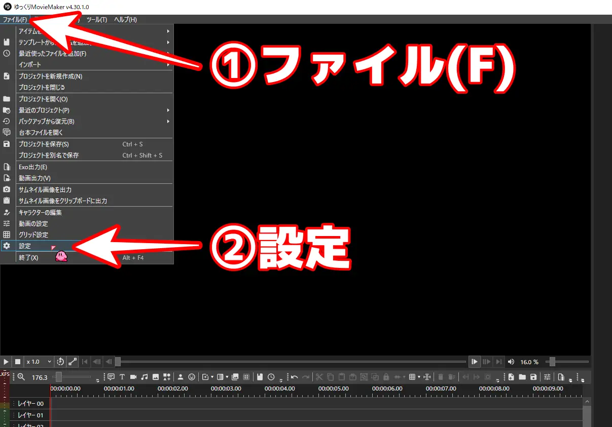発音辞書は、YMM4の左上にあるファイル(F)→設定から設定画面を開き、
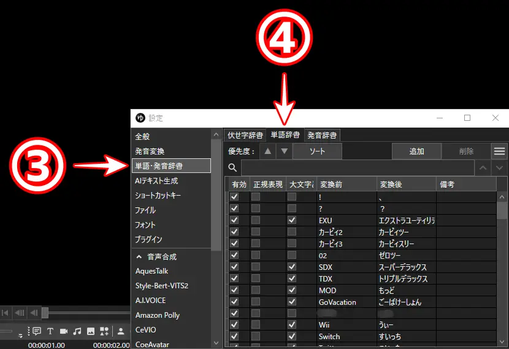単語・発音辞書→単語辞書から登録することが出来ます。
※隣に発音辞書というものがありますが、これは発音を別の発音に変換することが出来る辞書の為、ひらがなと発音記号以外は入力しても意味がありません。
空白の欄に変換前の文字と変換後の発音を入力すれば、辞書が有効化されます。
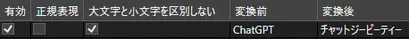単語辞書を見ると、左上から有効・正規表現・大文字と小文字を区別しない・変換前・変換後・備考という項目があります。
1つずつ解説していきます。
有効は名前の通り、その発音を有効にするかどうかです。
正規表現は変換前の文字列に正規表現を使っている際にチェックを入れる項目です。後程詳しく解説します。
大文字と小文字を区別しないは、上の画像のように英単語を登録して入力する場合に、大文字と小文字を変換前の通りに入力しなくても発音を変換させることが出来ます。
例えば、上の画像の場合は「ChatGPT」と登録されていますが、入力する際は「chatgpt」でも「CHATGPT」でも「ChAtGpT」でも「チャットジーピーティー」と発音してくれます。
変換前は、変換する文字です。
変換後は、変換前の文字列の読みをひらがなもしくはカタカナで入力します。ひらがなで入力すると、変換されたときに発音記号（/や+など）が勝手に付きます。カタカナで設定すると発音記号は付きません。状況に応じて使い分けてください。
もう一つ、備考の欄がありますが、こちらはメモ欄なので入力してもしなくても大丈夫だと思います。
正規表現とは？
先ほど発音辞書の追加項目に正規表現というチェックボックスがありました。
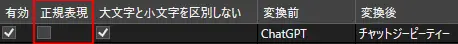これは、変換前の文字を指定する際に、正規表現を使う場合にチェックを入れます。
その正規表現が一体どういうものかというと、特定の文字を指定せず、いくつかの文字をまとめて別の文字で指定するというものです。
この一言では上手く伝わらないかもしれませんので、例を出してみます。
例えば、「￥1」を「いちえん」と読みたい時。
使うのが「￥1」だけならこれを登録するだけで充分ですが、他にも「￥2」や「￥3」、「￥500」とかを使う場合に、単語辞書に一つずつ登録していくのはキリがありません。
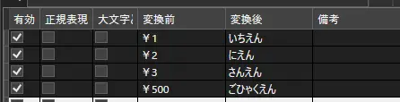こんなことをしていたら日が暮れるどころか永遠に朝が来なくなってしまいます。
そこで、正規表現を使う事でたった一行追加するだけでどんな数字にも対応できてしまうのです。
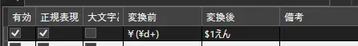これを登録すると・・・
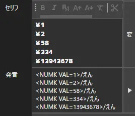ちゃんと数字の後に「えん」が入ってますね！
これが正規表現で出来る事です。かなり便利でしょ？
正規表現の使い方
正規表現は、伏せ字辞書・単語辞書・発音辞書のどれでも使うことが出来ます。
今回は単語辞書を解説しますが、どの辞書も書き方は同じです。
先ほどの画像で説明すると、
変換前の\d+という所（￥は環境によっては半角だと＼と表現されます）が、正規表現となる部分です。
YMM4では、正規表現を使う際に()で囲む必要がある為、変換前の欄には(\d+)と書いてあります。
それと、正規表現のチェックを忘れずに付けてください。
変換後の欄には、$1という文字が入っています。
これは、正規表現で表した変換前の文字をそのまま使う為に使う記号です。
この場合だと(\d+)の部分に入る数字を$1と置き換えて発音させるようにできます。
もしこれを入れずに変換後の文字を「えん」のみにした場合、「￥1」や「￥20」、「￥1000」など、どんな数字を入れても読む時は数字は読まれず「えん」のみになります。
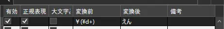 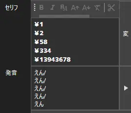このように、数字の部分は無視して変換後の文字だけが発音されます。
それでは、正規表現を複数使う場合はどうすれば良いでしょうか。
例として、「〇〇：〇〇」を「〇〇じ〇〇ふん」と読ませる場合を説明します。
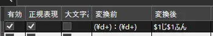このように変換後を先ほどと同じように書いてしまうと、
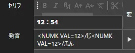「12：54」と書いたはずなのに、発音は「12じ12ふん」になってしまっています。
正規表現を複数使う場合は、$の後に続く数字を繰り上げないといけません。
「$1」は1つ目の正規表現、つまり上の例だと「12」になります。
「$2」は2つ目の正規表現、上の例では「54」に該当します。
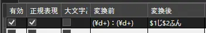正規表現を2つ以上使う場合も「$3」「$4」「$5」・・・と繰り上げていけばOKです。
使いやすい正規表現（数字）
正規表現には沢山種類があるので、ググってもらう方が早いとは思うんですが、僕からも単語辞書で使いやすそうな正規表現を少しだけ紹介します。
「\d」
全ての半角数字1桁を指定します。1桁しか使えないので注意が必要です。
例）(\d)(\d)(\d)-(\d)(\d)(\d)(\d) ▶ $1 $2 $3の$4 $5 $6 $7
※郵便番号。変換後の数字の間にスペースを入れると数字を一文字ずつ発音してくれる（発音が変だけど）
「\d+」
1桁以上の全ての半角数字を指定します。
例）(\d+)pts ▶ $1ポイント
「\d{4}」
4桁の全ての半角数字を指定します。数字の部分を変えれば桁数を変えられます。
例）(\d{4})/(\d{2})/(\d{2}) ▶ $1ねん$2がつ$3にち
数字以外の正規表現もありますが、単語辞書では特に使い道が思いつかなかったので割愛させていただきます。
さいごに
意外とYMM4で正規表現を使っている人がいない（気がする）し、僕も最近まで知らなかったのでこの機会にドンドン使いこなしていきたいなーと思っています。
辞書にセリフを打ってから読みをよく修正してる人は、是非辞書を登録してみてください！正規表現を使えば複雑な条件にも対応できますよ！
という訳で、
バイバイ！